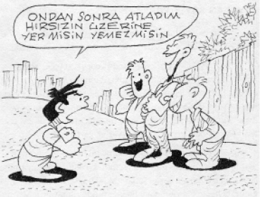
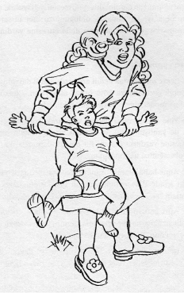
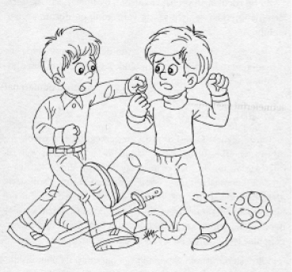
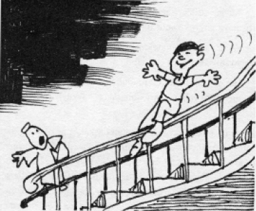

Çocukların büyük çoğunluğu yalan söyler, daha doğrusu söyledikleri yalana benzer. Genelde bu yaşla ilgilidir.
• Çok küçükken (2-3 yaşlarında) çocuk gerçekleri çarpıtmaya başlar: Islakken altına yapmadığını söyler, tabağı dolu olduğu halde yemeğini bitirdiğine inandırmaya çalışır. Bu halinde bizim söylediğimiz masum yalanların tesiri büyüktür. Evde olduğumuz halde yok dedirtmemiz gibi. Çocuk gerçekleri kendi işine gelecek şekilde ayarlar, çarpıtır.
• 4-5 yaşına doğru çocuk kendine ait, anne-babasındakinden farklı düşüncelerinin olduğunun ayrımına varmaya başlar. Gerçek olmayan şeyler anlatarak, onun bizden farklı olduğunu, beklenen şeyleri söylemek zorunda olmayan başka bir kişilik olduğunu bilmemiz gerektiğini anlatmak istiyordur. Bu yaşta bizi işletmek ve tahrik etmek için şaka yapmaya da başlar.
• Bazı çocuklar uydurmayı severler. Olur, olmaz şeyler anlatır, kendilerinin de gerçekten inandığı bir yığın hikâye uydururlar. Bu çoğunlukla özgüven eksikliği yaşadıkları veya gerçekleri söylemeye engel olan bir suçluluk duygusunu bastırmadıkları içindir. Bu çocukların kendilerine güveni yoktur. Değişik hikâyeler anlatarak zayıflıklarını kapatmak için dikkatleri üzerlerine çekmek isterler.
• Çocuğumuzun doğru söylemeyi öğrenmesine yardımcı olabilmek için öncelikle yalan söylemenin, birini kandırmanın yanlış olduğunu anlayabilecek durumda olup olmadığını bilmemiz gerekir.

• Beş yaşın altındaki çocukların söyledikleri yalana benzeyebilir veya kendi inandıkları şekilde hikâye anlatabilirler. Hemen yalan damgasını vurmayalım.
Ne Yapmalı?
• Yalan söylediğinde sinirlenmeden, cezalandırmadan ve azarlamadan “Acaba gerçekten doğru mu söylediklerin? Bana değilmiş gibi geliyor” diyelim.
• “Ben senin annenim, sana güveniyorum. Doğruyu duymak istiyorum” diye devam edelim.
• Yine ısrarla yalan söylüyorsa onu cezalandıralım. Odasına bir süre kapatmak, ona hafifçe vurmak gibi.
• Ama bu konuları çocuğumuzla yalnız olduğunda konuşalım, asla başkalarının önünde değil.
• Öncelikle onlara uygun örnek olalım ve yalan söylemekten, verdiğimiz sözden vazgeçmekten kaçınalım.
• Çocuğumuzun bize yalan söylediğini veya kandırmaya çalıştığını biliyorsak, köşeye sıkıştırıp yalanını itiraf etmesi için zorlamayalım.
• Kötü davranışına son vermek için yardıma hazır olduğumuzu vurgulayalım.
Çocuk, her şeyden önce sakinleşmek, zevk almak ve duygusal bir ihtiyacını gidermek için parmağını emer. Bunun onu rahatlattığını ve güven verdiğini anlar.
Önceleri sıkıntılı anında parmağını ağzına götürürken, giderek alışkanlık haline getirir.
Parmak emmeye çocuklarda yüzde 80’lere varan yaygınlıkta rastlanır.
Çocuk anaokuluna başladığında başka şeylerle ilgileneceğinden sıkıntılarına çareyi başka yollarla bulabilir. Büyüdükçe parmak emmeyi bırakır.
Çocuk ilkokula başlarken parmağını emse bile bu anormal bir problem değildir. Büyümesini engellemez.
Ancak 7 yaşından sonra da parmak emmeye devam ediyorsa ön dişlerinde bozukluklara yol açabileceğinden bir uzmana müracaat uygun olacaktır.
Ne Yapmalı?
• Baskıyla kesmeye çalışmak doğru değildir. Acı çekmiyorsa, “parmak emiyor” diye rahatsız etmek yanlıştır.
• Küçük düşürücü benzetmelerden uzak durmalıyız “Baban gibisin”, “Bu çok iğrenç” gibi olumsuz tutumlar takınmaktan kaçınalım.
• Kardeşleriyle kıyaslamayı, aşağılamayı bırakalım.
• Acı, oje, karabiber, eldiven gibi metotlar mahzurludur.
• Onunla anlayabileceği üslupla konuşmayı deneyelim. Ona değer verelim.
• Meşgul olmasını, dikkatinin dağılmasını sağlayalım.
• Ayrıca ailede huzurlu bir ortam olması, ebeveynler arasında gerginlik olmaması önemlidir.
Çocuğumuz çeşitli sebeplerle tırnağını yiyebilir:
• Evde onu huzursuz eden ortam vardır. Anne-baba geçimsiz veya aileye küçük kardeş gelmiştir. Kafası karışıktır ve saldırganlığını başka türlü ifade edemiyordur.
• Kendini güvende hissedemiyordur, sıkıntılıdır.
• Sevdiği birinin tırnak yemesini taklit edebilir.
Ne Yapmalı?
• “Yeme!” diye baskı yaparak sürekli tedirgin etmek doğru değildir, fayda da vermez.
• Tırnak yemeyenlerle kıyaslamayalım.
• İçimizi rahat tutalım ve olaya hoşgörülü olalım. Aslında sıkıntı bütün çocuklarda mevcuttur. Herkes kendi yöntemiyle ifade etmektedir.
• Onunla konuşalım ve güven verelim “Sana yardımcı olmak için mümkün olan her şeyi yapacağım” diyelim
Her çocuk, kendine ait bir yaşta gece altına kaçırmayı keser. Ama sonuçta, 5-6 yaşından önce endişe edilecek bir durum yoktur. Hatta yedi yaşına basmış çocukların yüzde on beşi düzenli olarak yatağını ıslatmaktadırlar.
Altını ıslatma problemi devam ediyorsa, bunun sebebi çocuğumuzun henüz gelişmemiş veya normalden küçük idrar torbası olabilir. İdrar torbaları geliştikçe idrarlarını tutma becerisine kavuşurlar ve tüm geceyi tuvalete gitmeden geçirebilirler.
Ancak bir süre temiz kalmış ve sonra tekrar yatağı ıslatmaya başlamışsa olay psikolojiktir, incelenmesi gerekir.
Ne Yapmalı?
• Çocuğun yatağını ıslatmasının irade dışı bir olay olduğunu bilmeliyiz.
• Altına çocuk bezi koymayı bırakalım, her gün çarşaflarını değiştirmekten bıksak bile… Yalnız çift çarşafın altına naylon serebiliriz.
• Başkalarının yanında onu bu yüzden azarlamayalım, kızmayalım. Küçük düşürmekten kaçınalım.
• Akşamları aşırı sıvı alımını önleyelim.
• Kapısını açık bırakalım. Yatak odasında gece lambası bulunsun.
• Ona moral verelim: “Bir gün mutlaka başaracaksın. Sadece zaman sorunu bu” diyelim.
Kekemelik; ses, kulak ve kelimelerin tekrarı, uzatılması veya konuşma akışını kesen duraklamalar şeklinde kendini gösteren bir konuşma bozukluğudur. Bozukluğun şiddeti, kişinin içinde bulunduğu duruma göre değişir. Stres halinde artar.
Kekemelik çeşitli sebeplerle ortaya çıkabilir.
Yaklaşık 2 yaşında:
Konuşmanın dile oturmaya başladığı zaman nispeten sık görülür. Çocuk ağzından çıkmayan kelimelere sinirlenir. Konuşmaya çok istekli ve kararlı olduğundan, kendini göstermek isterken bazı kelimelere takılır.
Çevresinde iyi konuşabilmesine ve kendisini ifade etmesini öğrenmesine zaman ayırmayan, stresli yetişkinler olabilir. Belki de farkına varmadan, çocuğun lafı kesilmekte ve cümleyi onun yerine yetişkin bitirmektedir. Çocuk da hızlı konuşayım derken bazı kelimelere yine takılabilir.
3-4 yaşlarında:
Yapı bozukluğuyla ilgisi olmayan kekemeliktir. Bazı sesli harfleri telaffuz etmek veya tekrarlamak zorluğundan ibarettir.
Sebebi; çocuklardaki düşünce hızının, konuşma hızını geçmesindendir. Yetersiz kelime dağarcığı yüzünden düşünce ifade edilememekte, bu sebepten konuşma bozukluğu ortaya çıkmaktadır. Bu tip kekemelik geçicidir ve önemli değildir. Deneme-yanılmaya bağlıdır.
Burada ailenin tutumu önemlidir. Çocuğa düzgün konuşması için baskı yapılmamalı, çocuğun kendi konuşmasına dikkatini yoğunlaştırmasının önüne geçilmelidir.
6-7 yaşlarında:
Temelinde aile içi ilişkilere bağlı olarak çocuğun sıkıntılı ve güvensiz oluşu yatabilir.
Ne Yapmalı?
• Bir kelimeye takıldığını anladığımızda elimizi omzuna koyalım, elini tutalım ve ona “Anlatmak istediğin çok ilginç…” diyelim. Hoşgörülü ve anlayışlı davranalım.
• Alaya almaktan, çeşitli tepkilerle bunaltmaktan kaçınalım. Sanki hiçbir şey yokmuş gibi davranalım ve bu duruma aldırmayalım.
Çocukların sık olarak canı sıkılır. Bu normaldir. Aslında onlara tek başına oynamasını da öğretmek lazımdır.
• 2 yaşına kadar, çocuklar birlikte oynamasını bilmezler. Bununla birlikte, tek başlarına oynarlar veya oynayabilirler.
• 2-3 yaşları arasında, sosyal ilişkiler ve çocuğun iletişim imkânları artar. Artık başka birisi ile oynayabilir.
Bu dönemden sonra ise tek başına oynayabilmelidir. Tek başına keşfetmeyi, odasında oyuncakları ile birlikte yalnız kalma alışkanlığını kazanmalıdır. Doğumdan itibaren bir yetişkinin varlığını hep yanında hisseden çocuk, en ufak bir yalnızlıkta tedirginlik duyar, korkar ve “Canım sıkılıyor” diye meşgul olan annesine gelir.
Bu yüzden:
• Çocuğumuza güvenelim. Odasında tek başına oynamasına ara sıra gözlemleyerek izin verelim.
• İlk zamanlarda oyuncaklarını yanında gezdirmesine ve bizim yanımızda oynamasına izin verelim. Eğer yalnızlık onu çok tedirgin ediyorsa, bu durum onu sakinleştirecektir.
Aslında ara sıra sıkılmak da iyidir:
• Yapılacak hiçbir şeyin olmaması, aylak aylak gezinmek için bir fırsattır. Böylelikle çocuk hayal gücü geliştirir, gözlem yapar. Zekâsını ve dolayısı ile kendisini dinlendirmesine fırsat verir.
• Hayatın her zaman dolu geçmeyeceğini anlamış olur. Kimi zaman işsiz ve yalnız da kalınabilir. Sıkılan çocuk hayatın bu gerçeğinin üstesinden gelmesini öğrenmek zorundadır. Kendi kendine bir uğraş bulmak için üretici biri haline dönüşür, bir şeyler yapma ihtiyacı duyar. Bu da oldukça faydalıdır.
Aslında kardeşler arasında kıskançlık, dozunda yaşadığında, doğaldır. Çocuklar için faydalı ve sağlıklı bir haldir. Her çocuk, anne-babanın sevgisinin ve ilgisinin tümünü ister. En sevilen, en çok ilgilenilen olmak ister. Bu da kıskançlığı kaçınılmaz kılar.
Her çocuk, ayrı bir birey olarak bencillik, sahip olma, paylaşamama, kendine güven duymaya ihtiyaç, özenti gibi duygular taşıdığı gibi kıskanabilir de…
Aslında kıskançlıkla çocuklar, hayatın gerçeklerinden biriyle yüzleşmiş olurlar.
Bu da onun çevresindeki ilginin tümüne ve yaşamın bütün avantajlarına sahip olamayacağıdır. Bu acı ve zor da olsa çocuk için bir derstir. Sevgi paylaşılacaktır ve paylaşıldıkça da sandığının aksine azalmayacaktır.
Böyle normal aile içi rekabet, çocuksu benmerkezciliği ve bencilliği azaltır. Rahatsızlık verici de olsa, başkalarıyla geçinmek için deneyim ve kolaylık sağlar.
Niçin Kıskanır?
• Çocuk, gelişiminin bazı dönemlerinde kıskançlık gösterebilir. Mesela; 3 yaşındaki bir çocuk eşyalarını, oyuncaklarını, yemeğini, ailesini paylaşmayı henüz öğrenmemiştir. Eşyasını başkası kullanması gereken durumda kıskançlığa girebilir ve bu, doğal bir durumdur.
• Genellikle ilk çocuklarda kardeş kıskançlığı dikkati çeker. Ailesinin ilgi ve sevgisine alışan çocuk, yeni gelen kardeşi kendine rakip olarak görür. Devre dışı kalacağını zanneden büyük çocuğa aile destek olmalıdır.
• Çocuğu yoksun bırakmak veya her istediğini yerine getirmek, sürekli maddî ödüller vermek de kıskançlığı körükler.
Kıskançlığın Belirtileri
• Kıskanç çocuk, huzursuz davranışlar gösterir, uykusuzluk çeker. Basit sebeplerle kızar, ağlar, bağırır. Hele hayatının ana konusu kıskançlık olmuşsa, çocuk acı içindedir. Yardıma ihtiyacı vardır.
• Anne-baba ile yatmak ister.
• İlgi çekmeye çalışır.
• Yeniden altını ıslatmaya, meme ve parmak emmeye, bebeksi konuşmaya başlayacaktır.
• Küçük kardeşine zarar vermek isteyebilir.
• Anne-babasının sevgisini, ilgisini sürekli arzular.
Ne Yapmalı?
• Amacımız, kıskançlık duygusunun varlığını tümüyle ortadan kaldırmak değil, onu ortaya çıkaran durumları azaltmak ve göründüğünde sebeplerini araştırmak olmalıdır.
• Çocuklarımızı başkalarıyla kıyaslamayalım.
• Çocuklara sevgi, ilgi ve disiplinde tutarlı davranalım, aşırı gösterilerden kaçınalım.
• Çocuklar arasında büyük-küçük, kız-erkek gibi ayırımlar yapmayalım.
• Kardeşini kıskanan büyük çocuğa sözgelimi kardeşinin yemeğini beraber yedirmeyi teklif edelim. Böylelikle o da ihmal edilmemiş olur.
• Kendini yetersiz ve değersiz hisseden çocuğun kıskançlığa kolay kapıldığını bilelim. Kendini seven ve kendiyle barışık olan çocuklar, kardeşleriyle daha iyi geçinirler. Bu yüzden onları özsaygısı olan kişiler olarak yetiştirelim.
• Sürekli bir çocuğumuza yöneliyorsak, bunun sebebini keşfetmek için kendimizi yoklayalım. Hepsine ilgi ve sevgi göstermeye gayret edelim.
• Çocuklarımızı kardeşleriyle de kıyaslamayalım. Böyle sözler onlar için öldürücü birer zehirdir. Kıskançlığı, çekememezliği ve yetersizliği arttırırlar.
Çocuğun düşüncesine başka birinden daha aşağıda olduğunu nakşederler. Bilelim ki; her çocuk tektir ve kendine özeldir. Onu başkasıyla karşılaştırmak yanlıştır.
• Mümkünse odalarını, değilse köşelerini ve dolaplarını ayıralım.
• Onları birbirinden farklı giydirelim.
Çocuk büyüdükçe yaşına göre değişen bazı korkular olacaktır. Aslında bu tür korkuları normaldir ve hatta ruhsal gelişimleri için gereklidir.
1-2 yaş arasındaki çocukların başlıca korkusu banyo yapmaktır. Ayrıca anne ve babadan ayrılma endişesi de bu yaşlarda olağan sayılır. Yine tanıdık olmayan kişiler de endişe ve gerilim oluşturabilir.
3-5 yaşlarındaki çocuklar karanlıktan, hayvanlardan, canavarlardan, kendi güvenliklerinden ve anne babalarının güvenliği konusunda korkabilirler.
6-7 yaşlarında daha çok yabancılardan, geceleri yıldırım düşmesinden ve gök gürültüsünden, ölümden, anne-babası kaybetmekten, günlük hayatta karşılaşacağı tehlikelerden, yine karanlıktan korkabilirler.
Çocuğun korkularının yeni bir eve taşınma, okul değiştirme, ailede ölüm veya başka bir travmatik durum (zedelenme) karşısında artması normaldir.
Bu gibi stresli haller çocuğun güvenliğinin karşısında bir tehdit oluşturmuş olabilir.
Korku, çocuğun yeni ortamının güvenli ve emin bir yer olduğunu hissetmeye başlamasıyla birlikte ortadan kalkacaktır. Yine anne-babasının kendisiyle birlikte olduğunu görmesi ve bilmesi onu rahatlatacaktır.
Ne Yapmalıyız?
• Acaba korkuları aşırı bir boyutta mıdır? Her çocukta karşılaşabileceğimiz türden korkularsa bunları yenmesi kolay olur.
• Korkularına değil, çocuğumuza sempati gösterelim. Korkuları onaylamadan, çocuğumuzun yaşadığı endişelerin farkında olmak, onu anladığımızı ona hissettirmek önemlidir. Bilgi ve anlayışla ona yaklaşalım, onu rahatlatalım.
• Korkuları ile yüzleşmesini sağlayalım. Çocuk, korkularının aslında bir temele dayanmadığını anlayınca, bu korkular genellikle azalır veya kaybolur. Yavaş yavaş, küçük adımlarla ilerleyerek korkusu giderilir. Sözgelimi karanlık korkusunu yenmek için çocuğun odasındaki ışığı kapatarak gittikçe artan sürelerde karanlıkta tek başına oturmasını sağlamayı deneyebiliriz. Sonunda yalnızlığından etkilenmiyor duruma gelince, karanlığa alışma denemelerine geçeriz. Tabiî bu sırada ona desteğimiz de önemlidir ve çocuk onu korumak için yanında olduğumuzu bilmelidir.
• Duygularını dinleyelim, onu anlamaya çalışalım. Desteğimizin hep yanında olduğunu bilmesini sağlayalım. Çocuğun korkularına sert tepki vermekten özenle kaçınalım.
• Çocuğun izlediği şiddet ve korku içerikli filmlerden etkileneceğini hatırımızdan çıkarmayalım. Bu yüzden izlemesi sakıncalı olan filmlerden, hikâye ve masallardan onu koruyalım.
• Olaylara aşırı tepki vererek çocuklara kötü örnek olmayalım. Çocukları korkularından dolayı ayıplamak, utandırmak, alay etmek ve korkunun üstüne birden gitmekten kaçınalım.
• Çocuğun yanında korku niteliği taşıyan konular konuşmayalım. Küçükken, bir gün evde annemin misafirlerle konuşurken “hırsızların pencereden girerek kötülük yaptıklarını” anlattığını duymuştum. Sonra pencereden hırsız girecek diye senelerce korktuğumu hatırlıyorum.
2-4 yaşındaki çocukların öfke nöbetlerine girmeleri çok normaldir ve bu halleri büyümelerinin doğal bir parçasıdır. Çocuk gücünü göstermek, ilgi çekmek, yeni becerilerini uygulamak ve son öğrendiklerini yapma sorumluluğu almak ister. Amaçlarını yerine getirmek isterken anne-babasının direnişi ile karşılaşırsa öfke nöbetleri geçirir.
Ancak bazen bu nöbetler sinir bozucu, sıkıcı ve endişe verici boyutta olabilir. Çocuğumuz eşyaları fırlatabilir, etrafa yumruklar atabilir. Hatta kanayana kadar kendi bileklerini ısırabilir veya kafalarını sert bir yere vurabilirler.
Öfke nöbeti geçiren çocuk ile başa çıkmanın en iyi yolu, sakinleşene kadar bu haline hiç aldırmamak, önemsememektir. İfadesiz bir çehre takınalım, oradan uzaklaşalım veya çocuğu kucağımıza alıp odanın dışına ya da odasına bırakalım. Bu olmaz ise:
Onu kaldırıp sıkıca kucağımızda tutalım. Yüzümüzde hiçbir ifade olmadan direkt gözlerinin içine bakalım veya hiç ona bakmayalım. Öfke nöbetini sona erdirene kadar onu sıkıca tutalım.

Sakinleşince kucağımıza alalım ve konuyla ilgili konuşalım.
“Kızgın olduğunu biliyorum, bu problemi çözmen için ne yapabiliriz?” veya buna benzer cümlelerle onu rahatlatalım. Bu arada onu sevdiğimizi söyleyelim. Sevgimizin azalmadığını, her an ona yardıma hazır olduğumuzu vurgulayalım.
Çocuğumuzun derdini dile getirmesini sağlayacak, onu konuşturarak iyi bir dinleyici olduğumuzu ona hissettirelim. Olumsuz duygu ve sıkıntılarını ifade etmesine yardımcı olalım.
Ne Yapmalı?
• Ebeveynler olarak kendi aramızda sinirli davranışlar sergileyerek çocuğumuza kötü örnek olmayalım. Çünkü o bizi kendine model alır ve gözlediğini taklit eder.
• Yine çocuğumuza bağırıp çağırarak, kötü sözler söylemek de yanlıştır. Sıcak ve samimi bir yaklaşımla sorununu çözmesine yardımcı olalım. Bu davranışlarımızla da ona örnek olacağımızı unutmayalım.
• Anne-baba olarak disiplin konusunda tutarlı ve görüş birliği içinde davranalım. Çelişkili hareketlerden kaçınalım. Birimizin “ak” dediğine diğerimiz “kara” dememelidir.
• Aşırı koruyuculuk ve hoşgörülü davranış, çocuklardaki disiplinsizliği artırır ve öfke nöbetlerinin daha şiddetli olmasına sebep olur. Bu durumdan kaçınalım.
• Gelişimi itibariyle henüz beceremediği davranışlar için onu eleştirmeyelim, alay etmeyelim. Ona güvendiğimizi belli edelim.
• Öfkeli çocuğa öfkeli cevap vermekten sakınalım, sakin olalım.
Genelde gecenin başlangıcında, yani çocuğun uyumasını takiben iki üç saat içinde, derin uyku döneminde, çocuğun tamamıyla uyuduğu, bilinçli olmadığı ve rüya görmediği zaman bu rahatsızlık belirir.
Hızlı kalp atışı, terleme, kusma, kesik kesik nefes alma gibi fiziksel belirtiler de görülür. Çocuk panik içindedir. Hareketleri şuursuz, bakışlar korkuludur. Çığlık atar. Anne-babasını tanımaz, hiçbir şey hatırlayamaz ve açıklayamaz.
Böyle bir nöbet esnasında onu uyandırmak doğru değildir. Başına ne geldiğinin zaten farkına varmaz. Uyandırırsak gerilimi ve korkusu daha çok artacaktır. Bu anı ertesi sabah konuşmak ve çocuğa anlatmak da yanlıştır. Hiç bahsedilmemeli, bir şey olmamış gibi davranılmalıdır.
Bu tip çocukların yeterli ve düzenli uyumaları şarttır. Gerekirse daha erken ve aynı saatte yatırılarak bu durum sağlanmalıdır.
Yine stresli ve sıkıntılı çocuklarda daha sık gece şiddetine rastladığından huzurlu ve sakin olması için uygun ortam oluşturulmaya özen gösterilmelidir.
Kardeşlerin rekabeti hayatın bir gerçeğidir. Her çocuk, kız olsun veya erkek olsun, kendi içinde bir “sevgi potansiyeli” olduğu kadar, bir de “nefret potansiyeli” taşır. Bütün kardeşlerin de bu potansiyeli ifade etme ihtiyaçları vardır. Kardeşlerin arasındaki rekabettir bu. Bütün ailelerde mevcuttur. Bu potansiyele engel olmaktansa, dışarı yansıtmalarına izin vermek daha iyidir. Aşırıya kaçmadıktan sonra birbiriyle ettikleri kavga, onlar için aslında bir oyun ve eğlencedir.
Kardeşler arasında yapılan kavga başkaları ile olan ilişkilerini oluşturmanın ve tecrübe kazanmanın bir yoludur. Çocuklar kavga ederek yaradılışlarındaki saldırganlığı kontrol etmeyi öğrenir. Bu onun duygularını başka türlü ifade etmesine fırsat bulamadığındandır. Onların aralarına çok girmek doğru değildir. Kavga etmelerine biraz olsun izin vererek ve göz yumarak saldırganlık potansiyellerini sosyalleştirmeye ve yönlendirmeye imkân tanımış oluruz.

Aralarını bulmaya çalışmak, kimin haklı olduğunu anlamaya gayret etmek çoğu zaman doğru olmaz. Her çocuk olayı kendi açısından anlatacak ve işin aslını öğrenmek pek mümkün olmayacaktır.
Burada ebeveyn olarak bizim yapacağımız:
• Kardeşini tehlikeye atacak kadar şiddet uygulamanın yasak olduğunu söylemeliyiz. Bu konuda kararlı olduğumuzu vurgulamalıyız.
• Çocuklarımıza güvenelim ve sabırlı olalım. Şimdi aralarında kavga ediyorlar diye, onları şiddet ve kin yüklü bir gelecek beklemiyordur. Bunu oyun için de yaptıklarını bilelim. Aynı zamanda eğlenmek içindir. Can acıtmak için değildir. Tekrarlanan bu kavgalar zamanla kesilecektir veya seyrekleşecektir.
• Her çocuğa ona özel davranalım ve her kardeşine eşit davranmaya çalışmak saplantısından vazgeçelim. Onların kişiliklerine, ihtiyaçlarına göre yanlarında olalım.
• Kavga ettikleri zaman onlarla ilgilenerek veya onlarla tartışmaya girerek yanlış davranışı ödüllendirmeyelim.
• Kavgaya yol açan noktalar bulup, çocukların bunları halletmelerini sağlamaya çalışalım.
• Her defasında onlara müdahale ederek, onların oynamasını engellemeyelim. Aşırı olmadıkça kavgayı normal kabul edelim.
• Aralarındaki kavga bir açıdan başkaları ile olan ilişkilerini oluşturmanın bir yoludur. Çocuk kavga ederek, saldırganlığını kontrol etmeyi öğrenir. Bu onun duygularını başka türlü ifade etmesine fırsat bulamadığındandır. Bunu engellersek, daha gerginleşir. Onların kavga etmelerine biraz olsun izin vererek, saldırganlıklarını sosyalleştirmeye ve yönlendirmeye imkân tanımış oluruz.
Bazı çocuklar yaşıtlarına göre daha hareketli ve yaramazdırlar. Ancak aşırı hareketlilik her ortamda oluyor, yer ve zaman dinlemiyorsa hiperaktif çocuk söz konusudur.
Aşırı hareketli çocuklar devamlı kıpır kıpırdır, yerlerinde duramaz, sanki bitmez bir enerjileri vardır. Bu yüzden hiperaktif çocukla normal hareketli çocuğu karıştırmamak gerekir.
Hiperaktif çocuk çok hareketlidir. Ancak hareketlerinde belli bir hedefe yönelik devamlılık bulunmaz. Dikkati aşırı derecede dağınıktır.
Mesela; eline bir oyuncak verildiğinde kısa bir süre onunla oynar ve fırlatır atar. Hemen pencerelere tırmanır, perdelere asılır. Duvarları kalemle çizer. Dikkatini uzun süre belli bir yerde, olayda toplayamaz.

Hâlbuki çocuklar genel olarak canlı, hareketli ve hayat doludurlar. Hep oynar, hareket eder, koşar ve zıplarlar. Devamlı bir şeyler yaparlar veya yapmak isterler. Yorulmak nedir bilmezler. Yani çocuğun hareketli olması aslında normaldir, sağlıklı gelişmesinin işaretidir. Bu yüzden:
• Çocuklarımıza evde oynayacakları tehlikesiz mekânlar hazırlayalım. Bırakalım enerjilerini boşaltsınlar.
• Onları sık parklara, oyun sahalarına götürelim.
• Davranışlarını kısıtlamayalım. Onlara daha çok vakit ayıralım.
* * *